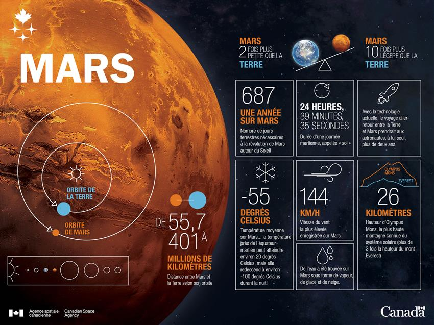
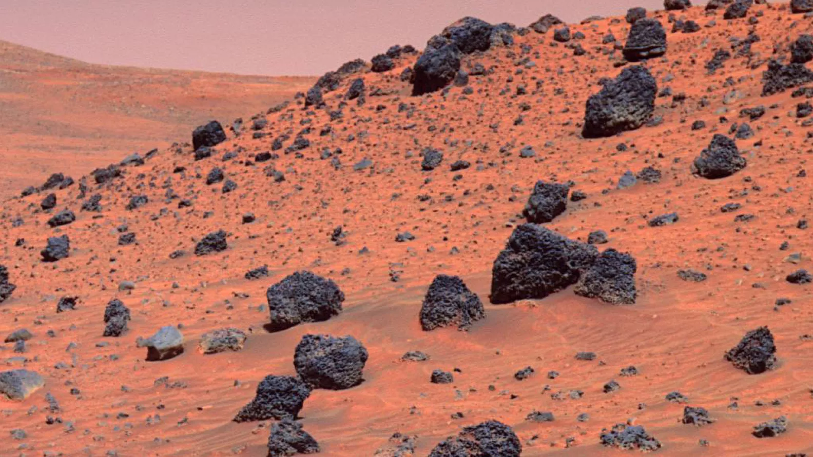

MARS
La planète rouge
Quatrième planète du système solaire, Mars fascine les humains depuis l'Antiquité. Désertique, glacée, balayée par des tempêtes de poussière, elle est aussi la plus accessible des autres mondes — et la candidate la plus sérieuse pour accueillir un jour une civilisation humaine.
L'essentiel à savoir

L'origine du nom Mars
Mars doit son nom au dieu romain de la guerre, à cause de sa couleur rouge sang qui évoquait pour les anciens les batailles et le feu. Mais avant les Romains, presque toutes les civilisations l'avaient déjà remarquée et lui avaient donné un nom :
Les Grecs l'appelaient Ares, les Égyptiens Her Desher (« le rouge »), les Chinois Huoxing (« étoile de feu »), les Indiens Mangala, et les Babyloniens Nergal. Le symbole ♂ que l'on utilise encore aujourd'hui représente la lance et le bouclier du dieu Mars.
Notre mot « mardi » vient justement de « jour de Mars » (en latin dies Martis). En anglais aussi : Tuesday vient de Tiw / Tyr, équivalent germanique du dieu Mars.
L'exploration de Mars
Depuis 60 ans, l'humanité envoie des engins observer Mars. C'est la planète la plus explorée du système solaire après la Terre.
▸ 1965 — Mariner 4 (USA) envoie les 22 premières photos
rapprochées de Mars.
▸ 1976 — Viking 1 et 2 se posent et envoient les premières
images en couleur du sol martien.
▸ 1997 — Le petit rover Sojourner roule pour la première
fois sur une autre planète.
▸ 2004 — Les jumeaux Spirit et Opportunity
explorent pendant des années (jusqu'à 14 ans pour Opportunity !).
▸ 2012 — Curiosity, gros comme une petite voiture,
cherche des traces de vie passée.
▸ 2021 — Perseverance + l'hélicoptère
Ingenuity, premier vol motorisé sur une autre planète !
Voler sur Mars est extrêmement difficile car l'atmosphère est environ 160 fois plus fine que sur Terre. Pourtant, Ingenuity a réussi à décoller en avril 2021 et a effectué 72 vols au total.
Mars dans nos rêves
Aucune autre planète n'a autant inspiré les artistes et les écrivains. Mars est devenue le décor de centaines de films, romans, jeux vidéo et BD.
▸ Romans : La Guerre des mondes de H. G. Wells (1898),
Chroniques martiennes de Ray Bradbury (1950), la Trilogie de Mars
de K. S. Robinson (terraforming sur 200 ans).
▸ Films : Total Recall (1990), Mars Attacks!,
Mission to Mars, et surtout Seul sur Mars
(Ridley Scott, 2015) — l'un des films les plus scientifiquement réalistes
sur la survie sur Mars.
▸ Jeux : Doom se passe sur Mars, ainsi que
Surviving Mars, et même Minecraft a un mod Mars.
Quand Orson Welles diffuse à la radio une adaptation de La Guerre des mondes, certains auditeurs américains croient à une vraie invasion martienne et appellent la police, paniqués !
Une planète rouillée
La couleur rouge de Mars vient de l'oxyde de fer — ce qu'on appelle plus simplement la rouille. Pendant des milliards d'années, le fer présent dans le sol martien s'est combiné à l'oxygène, formant une fine poussière rouge orangé qui recouvre toute la surface.
Cette poussière est si légère qu'elle est emportée par les vents et soulevée dans l'atmosphère. C'est pour cela que le ciel de Mars n'est pas bleu comme sur Terre, mais d'un beige rosé en pleine journée — et d'un étrange bleu pâle au coucher du soleil, exactement l'inverse de chez nous.
Sur Mars, le coucher de soleil est bleu. C'est parce que la poussière fine dans l'atmosphère diffuse différemment la lumière du Soleil.
Un air irrespirable
L'atmosphère de Mars est très différente de la nôtre. Elle est composée à 95 % de dioxyde de carbone (CO₂), et contient à peine 0,13 % d'oxygène. Un humain ne pourrait jamais respirer directement l'air martien.
De plus, cette atmosphère est environ 160 fois moins dense que celle de la Terre. Cela veut dire qu'elle protège très mal du froid spatial et des rayonnements dangereux du Soleil. Résultat : la température moyenne au sol est de −63 °C, et peut descendre à −143 °C aux pôles en hiver.
Tous les quelques années, une tempête de poussière peut recouvrir la planète entière et durer des semaines, plongeant la surface dans une pénombre orangée.
Quatre saisons, deux fois plus longues
Comme la Terre, Mars a quatre saisons. Pourquoi ? Parce que son axe de rotation est incliné de 25° (presque comme la Terre, à 23,5°). Quand un hémisphère penche vers le Soleil, c'est l'été ; quand il s'en éloigne, c'est l'hiver.
Mais comme une année martienne dure 687 jours terrestres (presque 2 ans), chaque saison martienne dure environ 6 mois terrestres. Un hiver martien, ça dure une éternité…
En hiver, près des pôles, il fait si froid (jusqu'à −143 °C) que le dioxyde de carbone de l'atmosphère se condense en neige. Il ne neige pas de l'eau, mais de la glace carbonique — la même matière que la « carboglace » qu'on utilise pour les effets de fumée !
Les diables de poussière
Si tu te promenais sur Mars, tu verrais peut-être passer un « dust devil » — un tourbillon de poussière géant qui ressemble à une mini-tornade. Ce sont des phénomènes bien connus sur Terre (dans les déserts), mais sur Mars ils sont beaucoup plus grands.
Les tourbillons martiens peuvent atteindre plusieurs kilomètres de hauteur et plusieurs centaines de mètres de largeur. Les rovers les ont photographiés et même filmés. Bonne nouvelle : leurs vents nettoient parfois les panneaux solaires des sondes posées sur Mars !
Le rover Opportunity avait perdu beaucoup d'énergie à cause de la poussière sur ses panneaux solaires. Plusieurs fois, un dust devil est passé juste à côté de lui et a balayé ses panneaux, lui redonnant des années de vie !
Nuages et aurores
On imagine Mars comme un désert sec et nu, mais le ciel martien réserve des surprises. À haute altitude, des nuages fins de glace d'eau se forment, surtout à l'aube. Les rovers les ont photographiés : ils ressemblent à des cirrus terrestres, mais blancs et parfois nacrés.
Plus surprenant encore : il y a des aurores sur Mars. Mais contrairement aux nôtres, qui dansent autour des pôles à cause du champ magnétique terrestre, les aurores martiennes apparaissent n'importe où sur la planète, car Mars n'a plus de champ magnétique global. Elles sont surtout visibles en ultraviolet, invisibles à l'œil nu.
Imagine-toi assis sur un rocher martien, regardant le Soleil descendre sur l'horizon. Le ciel n'est pas orange comme en pleine journée, mais d'un bleu profond et froid autour du soleil couchant. C'est ce qu'ont vu les rovers — un spectacle inversé du nôtre.
Des paysages géants
Mars détient deux records spectaculaires dans le système solaire : le plus haut volcan et le plus grand canyon.
Olympus Mons
Le plus haut volcan connu du système solaire. Sa base couvre une surface aussi grande que la France, et son sommet culmine à plus de deux fois et demie la hauteur de l'Everest.
21 km DE HAUTValles Marineris
Une cicatrice gigantesque sur la face de Mars : long comme les États-Unis traversés d'est en ouest, profond jusqu'à 7 km — environ 7 fois plus profond que le Grand Canyon d'Arizona.
4 000 km DE LONGHellas Planitia, le point bas
Au sud de Mars, un cratère géant s'étend sur 2 300 km de diamètre — comme la France et l'Espagne réunies. C'est Hellas Planitia, le plus grand bassin d'impact visible du système solaire.
Il s'est formé il y a 4 milliards d'années lors de la chute d'un astéroïde géant. Son fond se trouve 7 km plus bas que la moyenne de la surface martienne. C'est intéressant car au fond, la pression atmosphérique est presque deux fois plus haute que la moyenne — ce qui en fait l'endroit « le moins inhospitalier » de Mars.
Si on devait construire une base humaine sur Mars, certains scientifiques pensent qu'Hellas Planitia serait un bon choix : pression plus élevée (donc moins de risque pour les combinaisons), température un peu moins froide qu'ailleurs.
Les calottes polaires
Comme la Terre, Mars a deux calottes glaciaires, une à chaque pôle. Mais elles sont étranges : elles sont composées de deux types de glace superposés.
▸ La couche du dessus est de la glace de CO₂ (carboglace),
qui apparaît en hiver et disparaît en été.
▸ En dessous se trouve une vraie calotte de glace d'eau,
stable toute l'année. Elle atteint environ 2 km
d'épaisseur au pôle Nord et jusqu'à 3 km au pôle Sud.
Les calottes respirent avec les saisons : en hiver, jusqu'à 30 % du CO₂ atmosphérique se condense aux pôles ; en été, il s'évapore et rejoint l'atmosphère. C'est comme si la planète respirait deux fois par an.
Si on faisait fondre toute la glace d'eau des calottes martiennes, elle suffirait à couvrir toute Mars d'un océan d'environ 20 m de profondeur (estimation MARSIS/Marspedia). Une vraie réserve pour les futurs colons !
Les cratères explorés
La surface de Mars est criblée de cratères, souvenirs des collisions avec des astéroïdes au fil des milliards d'années. Certains sont devenus célèbres car ils ont été choisis comme terrains de jeu pour les rovers.
▸ Cratère Gale (154 km de diamètre) : exploré par
Curiosity depuis 2012. Au centre se dresse le Mont Sharp, une
montagne de roches sédimentaires de 5 km de haut.
▸ Cratère Jezero (45 km) : exploré par Perseverance
depuis 2021. C'était un lac il y a 3,5 milliards
d'années — le meilleur endroit pour chercher des traces de vie passée.
▸ Cratère Holden : envisagé pour de futures missions,
il contient des traces de très vieux écoulements d'eau.
Le bombement de Tharsis
Imagine un énorme « pansement » sur la planète : Tharsis est un bombement géant de l'écorce martienne, large de 5 000 km et haut de 10 km par rapport au reste de la surface.
C'est sur ce dôme que se sont formés les plus grands volcans du système solaire : Olympus Mons, mais aussi Ascraeus Mons, Pavonis Mons et Arsia Mons, alignés comme des perles sur un collier. Tharsis est tellement massif qu'il a déformé toute la planète : Valles Marineris est probablement une fissure causée par le poids de Tharsis.
Les volcans de Tharsis sont aujourd'hui silencieux. Mais certains ont été actifs jusqu'à il y a seulement 2 millions d'années — une éternité pour nous, mais très récent à l'échelle d'une planète. Mars n'est peut-être pas géologiquement morte.
La grande question
Y a-t-il de l'eau sur Mars ? Oui — mais pas comme on l'imagine. Aujourd'hui, l'eau existe surtout sous forme de glace : dans les calottes polaires (mélangée à de la glace carbonique) et dans le sous-sol.
Il y a plus de 3 milliards d'années, Mars était très différente : des fleuves coulaient, des lacs existaient, et il y avait peut-être même des océans. Les sondes martiennes ont trouvé des lits de rivières asséchés et des minéraux qui ne se forment qu'en présence d'eau liquide.
Cette découverte est immense : là où il y a eu de l'eau, il a peut-être existé une forme de vie. C'est l'une des grandes questions de la science aujourd'hui.
Le robot Perseverance, posé sur Mars en 2021, cherche justement des traces d'anciennes formes de vie microscopiques dans un cratère qui était autrefois un lac.
Où trouve-t-on l'eau ?
L'eau liquide est presque impossible sur Mars aujourd'hui : la pression est si basse qu'elle s'évaporerait ou gèlerait instantanément. Mais l'eau existe partout sous des formes cachées.
▸ Dans les calottes polaires (glace d'eau et de CO₂).
▸ Dans le permafrost : un sol gelé en permanence qui
couvre une grande partie de l'hémisphère nord.
▸ Sous forme de glace souterraine, cartographiée par
les radars des sondes en orbite (SHARAD à bord de Mars Reconnaissance Orbiter).
▸ En petites quantités dans l'humidité de l'air et la
rosée matinale (oui, il y a un peu de rosée sur Mars !).
Un lac sous-glaciaire
En 2018, la mission européenne Mars Express a fait une découverte stupéfiante : sous la calotte polaire sud, à 1,5 km sous la glace, son radar a détecté une vaste étendue d'eau liquide salée.
Le lac fait environ 20 km de long. Comment l'eau peut-elle rester liquide à −68 °C ? Probablement parce qu'elle est très chargée en sels, ce qui abaisse fortement son point de congélation (comme quand on jette du sel sur une route gelée en hiver).
Sur Terre, on trouve des bactéries dans des lacs sous-glaciaires similaires en Antarctique. Donc ce lac martien pourrait abriter une forme de vie microbienne. C'est l'une des hypothèses les plus excitantes de la science actuelle.
Deltas et rivières fossilisés
Depuis l'orbite, les sondes ont photographié des traces évidentes d'écoulements d'eau anciens : lits de rivières asséchés, vallées fluviales, et même des deltas.
Un delta se forme quand une rivière se jette dans un lac ou une mer et dépose des sédiments en éventail. Le rover Perseverance roule en ce moment dans l'ancien delta du cratère Jezero, qui était un lac il y a 3,5 milliards d'années. C'est dans ces sédiments qu'on a le plus de chance de trouver des fossiles microscopiques de la vie martienne passée.
Perseverance collecte des tubes d'échantillons qu'il dépose sur le sol martien. Une future mission (NASA + ESA) ira les chercher dans les années 2030 pour les rapporter sur Terre. Les premiers échantillons martiens analysés en laboratoire terrestre.
L'eau, indice de vie
Pourquoi cette obsession pour l'eau sur Mars ? Parce que partout sur Terre, on a trouvé que là où il y a de l'eau, il y a de la vie. Même dans les endroits les plus extrêmes (volcans sous-marins, glaciers, cristaux de sel), des bactéries existent.
Mars a-t-elle eu de l'eau liquide pendant assez longtemps pour que la vie apparaisse ? Probablement oui. La grande question reste : existe-t-il encore de la vie martienne aujourd'hui ?, par exemple dans le lac sous-glaciaire ou dans des poches d'humidité du sol.
Les sondes détectent parfois des bouffées de méthane dans l'atmosphère martienne, qui apparaissent et disparaissent mystérieusement. Sur Terre, 95 % du méthane est produit par des êtres vivants. Est-ce que des micro-organismes martiens respirent encore en silence sous le sol ?
Terre ↔ Mars
| Critère | 🌍 Terre | ♂ Mars |
|---|---|---|
| Diamètre | 12 742 km | 6 792 km |
| Gravité | 1 g (référence) | 0,38 g |
| Atmosphère | 78 % N₂ · 21 % O₂ | 95 % CO₂ |
| Température moyenne | +15 °C | −63 °C |
| Durée d'un jour | 24 h 00 | 24 h 37 |
| Durée d'une année | 365 jours | 687 jours |
| Lunes | 1 (la Lune) | 2 (Phobos, Deimos) |
Pourquoi coloniser Mars ?
La Terre est notre maison — mais pour la première fois dans l'histoire, l'humanité possède les technologies pour poser le pied sur une autre planète. Pourquoi vouloir le faire ?
Pour la science. Mars est un musée géologique : ses roches racontent l'histoire du système solaire, et peut-être l'origine de la vie.
Pour la survie. Mettre l'humanité sur deux planètes, c'est une assurance contre les catastrophes — astéroïdes, pandémies, guerres. Si la Terre vacille, Mars pourrait préserver l'espèce humaine.
Pour l'exploration. Depuis toujours, les humains explorent. Après les océans, après la Lune, Mars est la prochaine étape naturelle.
C'est cette idée qui inspire le projet NEOTERRA 2050 : imaginer dès aujourd'hui à quoi ressemblerait une cité durable, juste, et belle, sur la planète rouge.
Vivre sur Mars, c'est possible ?
Sept à neuf mois dans l'espace
Aller sur Mars n'est pas un voyage banal. Selon la position relative des deux planètes, le trajet dure entre 7 et 9 mois à bord d'un vaisseau spatial. Et il faut attendre 26 mois entre deux fenêtres de lancement favorables.
Pendant ce voyage, les astronautes seront confrontés à des défis énormes :
▸ Rayonnements cosmiques : sans atmosphère terrestre pour
les protéger, ils recevront 100 fois plus de
radiations qu'en orbite basse.
▸ Microgravité : leurs os perdent 1 % de densité par mois,
leurs muscles fondent. Il faut faire du sport plusieurs heures par jour.
▸ Isolement psychologique : enfermés dans un vaisseau de
quelques mètres carrés, loin de tout, pour près d'un an.
▸ Délai de communication : 4 à 24 minutes pour qu'un message
arrive sur Terre — impossible d'avoir une vraie conversation.
En 2010-2011, l'expérience Mars-500 a enfermé 6 volontaires pendant 520 jours dans une fausse capsule pour simuler un voyage Terre-Mars-Terre. Ils s'en sont tous sortis, prouvant que c'est psychologiquement possible.
Qui prépare Mars ?
Plusieurs acteurs travaillent en parallèle sur des missions humaines vers Mars, avec des philosophies très différentes.
▸ SpaceX (Elon Musk) : développe le Starship,
fusée géante réutilisable, avec l'ambition d'envoyer
100 personnes à la fois sur Mars et de
fonder une colonie permanente.
▸ NASA : programme Artemis pour retourner sur la
Lune d'abord, puis utiliser la Lune comme tremplin vers Mars (vers 2035–2040).
▸ Chine : prévoit une mission habitée vers 2033 et une
base lunaire en collaboration avec la Russie.
▸ ESA (Europe) : participe en partenariat avec la NASA
(rover ExoMars, mission de retour d'échantillons).
▸ Inde, Émirats, Japon : ont déjà des sondes en orbite ou
des projets de missions habitées à plus long terme.
En 2013, le projet (controversé) Mars One avait reçu plus de 200 000 candidatures de volontaires prêts à partir vers Mars… sans retour possible. Le projet n'a finalement pas abouti, mais ça montre à quel point l'idée fascine.
Que faut-il pour vivre ?
Une fois sur Mars, comment survivre dans cet environnement hostile ? Les futurs colons devront produire tout sur place (impossible de tout transporter depuis la Terre).
▸ Oxygène : produit en séparant l'O₂ du CO₂ de l'atmosphère.
Déjà testé par l'instrument MOXIE
à bord de Perseverance, qui a produit son premier oxygène en 2021 !
▸ Eau : extraite de la glace souterraine, fondue puis
purifiée. Le recyclage à 99 % sera essentiel.
▸ Nourriture : fermes verticales sous dômes,
cultures hydroponiques, peut-être insectes pour les protéines. Pas de
viande au début (trop coûteuse en ressources).
▸ Énergie : panneaux solaires en grandes surfaces
(mais perte d'efficacité avec la poussière) et petits
réacteurs nucléaires.
▸ Abri : enterrés ou couverts de régolithe pour bloquer
les radiations.
L'instrument MOXIE, gros comme une boîte de chaussures, a produit jusqu'à 10 grammes d'oxygène par heure sur Mars. C'est peu, mais ça prouve que la technique fonctionne. Une vraie usine d'oxygène pour 4 personnes devra être 200 fois plus puissante.
Qui partira sur Mars ?
Les premiers humains à fouler le sol martien seront probablement des astronautes professionnels, sélectionnés et entraînés pendant des années. Mais les générations suivantes seront différentes.
▸ Première vague (2030–2050) : missions de 18 mois à
quelques années, équipes de 4 à 8 astronautes, retour prévu sur Terre.
▸ Deuxième vague (2050–2100) : premières
colonies semi-permanentes avec rotations
d'équipes tous les 2-3 ans.
▸ Troisième vague (après 2100) : véritables
habitants nés ailleurs que sur Terre. Les premiers
« Martiens » de l'histoire humaine.
Sélection des premiers candidats : santé exceptionnelle, intelligence, stabilité psychologique, compétences scientifiques ou techniques, capacité à travailler en équipe enfermée.
Un enfant né sur Mars aurait des os et des muscles adaptés à 0,38 g. Il pourrait ne jamais revenir sur Terre, car ses jambes ne supporteraient pas notre gravité. Ce serait littéralement une nouvelle branche de l'humanité.
